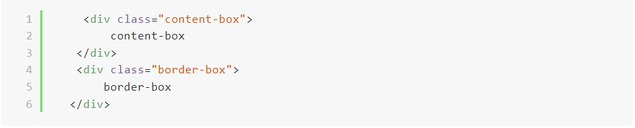

CSS -盒模型 box-model
Html 的每個元素都可以視為盒模型，並且對這個盒子去操控。
▶ Box Model 的定義
 盒模型的組成分為四部分:
盒模型的組成分為四部分:
- content (內容) : 圖片 100x 100 位置， HTML標籤包圍的內容。
- padding : box model 的內邊距。
- border: box model 的邊框，即調整盒模型時，以此和margin作為分界
- margin: box model 的外邊距，元素間的間距調整。
▶ content-box 與 border-box
content-box(如下圖): 所設定的數值 ＋ border ＋ padding
如圖片，原本設定寬度為100px ，實際盒模型寬度為
100px + ( padding 10px *2) + ( border 5px *2) = 130px。
 border-box: 所設定的數值 ( 已包含 border 和 padding )
border-box: 所設定的數值 ( 已包含 border 和 padding )
如圖片，原本設定寬度為100px ，實際盒模型寬度為 100px
兩者差異比較:
以下為開發程式碼:



如上圖兩者比較:
使用box-sizing: border-box 語法的好處， 即使調整 padding和border的數值，也不會因為元素變大而破版。